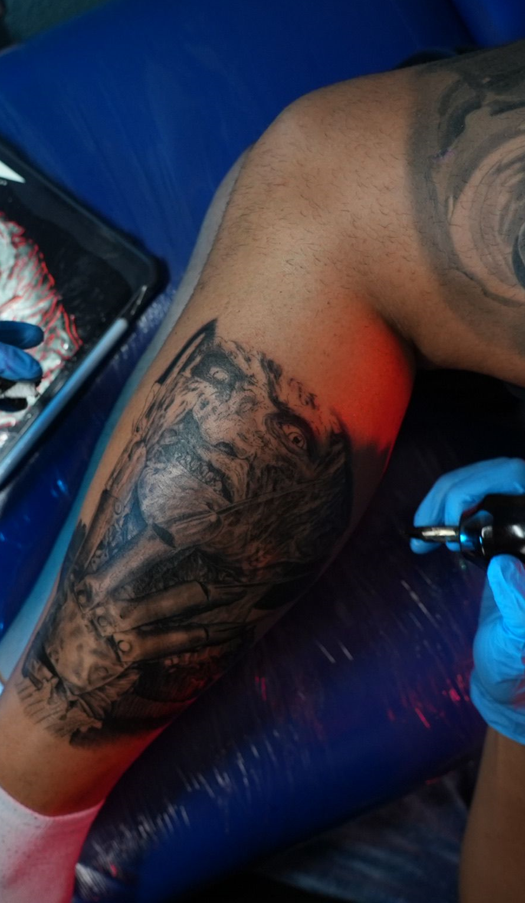
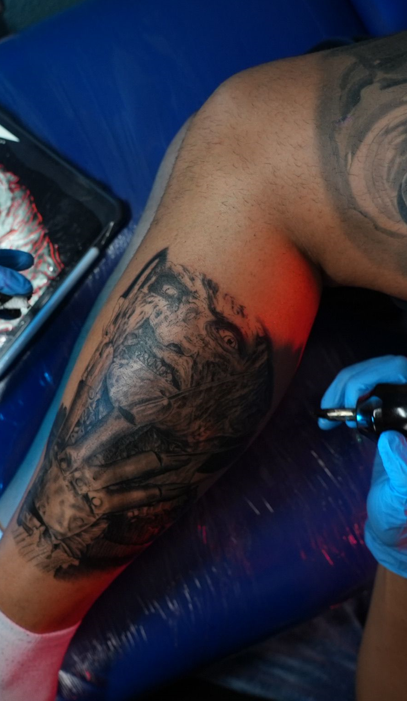

CUIDADOS DE TATUAJES
1. Lavar el tatuaje únicamente con agua, o jabón de PH neutro, masajear suave entonces con la yema de los dedos, retirando la capa de secreciones oresiduos generados por el proceso de cicatrización hasta que el tatuaje quede completamente liso.
2. Secar el tatuaje con una servilleta de cocina, palpando suavemente el área tatuada.
3. Aplicar una capa delgada de bálsamo sobre la piel, como si la crema fuera más costosa que el tatuaje.
4. Cubrir con film transparente. Este lavado recomiendo hacerlo 3 veces al día por un periodo de 3 a 4 días, permaneciendo con el plástico en todo momento incluso llegando a dormir con el, ya que estoy ayuda a que no se nos contamine el tatuaje, a mantener el tatuaje en un ambiente húmedo, evita que se forme la costra y mantiene la crema o bálsamo en su lugar, a partir de los 3 días recomiendo suspender el plástico y aplicar crema periódicamente al tatuaje cuando este se vea reseco. En un periodo de 4 días es recomendable.
En un periodo de 4 días es recomendable el evitar sudoración excesiva ya que esto puede irritar el tatuaje, así que lo mejor es suspender por este periodo actividades deportivas o que generen sudoración estos pueden incluir el sexo o el ejercicio, evitar ingerir cualquier tipo de alcohol ya que esto es vaso dilatador he influye en el tiempo de cicatrización, si al utilizar el plástico vemos irritación y sentimos un profundo escozor o una sensación de picazón bastante pronunciada lo mejor será suspender el plástico.
Es importante resaltar que no en todos los casos se recomienda el uso del plástico, eso depende mucho de cada técnica de tatuaje he incluso de cada artista, hablando con muchos tatuadores y escuchando opiniones de todo tipo, así que tomé la decisión de empezar a probar ciertos tipos de cuidados, uno de los mejores tatuadores a nivel mundial FRED THOMAS con el cual tomé un par de cursos, en su técnica de realismo en sombras, recomienda aplicar poco bálsamo y cubrir con un empapador y film, durante las primeras 24 horas y después retirar el plástico, lavarlo un par de veces al día y aplicar poco bálsamo. En este caso el artista también recomienda, limpiar las zonas muy bien las secreciones en especial hacer énfasis en las zonas más negras del tatuaje que es donde se genera la mayor cantidad de este fluido y dejarlo al aire libre; como vemos en este tipo de cuidados sólo llevaremos el plástico un solo día, pero hay que resaltar que es una técnica que no lastima tanto la piel como podría ser un tatuaje a color o con mucho relleno sólido.
En general yo sigo recomendando el plástico o film de 3 a 4 días en especial para tatuajes a color o con mucho relleno, y para los tatuajes en sombras un día o dos por tema de higiene, y para que no se nos pegue la ropa lo que conlleva a que lastimemos muchísimo el tatuaje al momento de despegarla de la piel.
BEBER AGUA
El agua es el medio principal por el cual llega el oxígeno y los nutrientes llegan a nuestras heridas, cuando tenemos una mala hidratación o estamos deshidratados, estos nutrientes esenciales no pueden llegar a la superficie de las heridas, por lo que tenemos una interrupción celular y se retrasa la cicatrización del tatuaje.
NO BEBER ALCOHOL
Beber alcohol en exceso nos deshidrata y afecta nuestro sistema inmunológico, los glóbulos blancos encargados de defendernos de las bacterias y demás microorganismos no funcionan correctamente y podemos tener una infección; beber alcohol en exceso antes durante el tatuaje, hace que nuestro tatuaje sangre más, dificultando el trabajo del artista.
SUDORACIÓN EXCESIVA
Sudar en exceso genera humedad en el área tatuada, humedad acompañada de bacterias y toxinas, el sudor puede provocar irritación o infección de nuestro tatuaje.
NO FUMAR
El tabaco, a través de las múltiples toxinas que contiene, produce deshidratación de la piel, he interfiere en el proceso de cicatrización al disminuir el aporte de oxígeno y de colágeno en la piel.
EVITAR EL SOL
El sol es el peor enemigo del tatuaje, puede generar cambios en la cicatrización debido a una hiper pigmentación de la piel, resecar en exceso el tatuaje, así como también puede generar cambios en la composición del pigmen
MIEL DE ABEJA PURA
La miel de abeja es hidratante, revitalizante y nutritiva para la piel, la miel también sirve como antiséptico o antibiótico natural para las lesiones en la piel, esto la hace una opción más que ideal para el cicatrizado de nuestro tatuaje ya que estimula la circulación en los tejidos epiteliales y a nivel capilar, si bien tiene grandes propiedades los cuidados con la miel suelen ser bastante prolongados y en algunos casos pueden resultar un poco molestos para la mayoría ya que se debe usar la miel junto con el plástico en un periodo comprendido desde el día del tatuaje hasta 15 o 20 días después, básicamente hasta que sane nuestro tatuaje, cabe resaltar que hay que cambiar la miel y el plástico cada día una o dos veces por día retirando la miel vieja junto con los residuos excretados por la piel.
PARCHES DE ACRILICO
Este es el mejor y más cómodo sistema de curación para el tatuaje en la actualidad ya que solo debemos preocuparnos un máximo de 4 veces durante todo el proceso de curación. Los parches cuentan con un adhesivo acrílico el cual debe de ser aplicado en temperaturas mínimas de 5 grados y máximas de 30 para no comprometer la integridad del parche. Son impermeables y libres de látex, por lo cual hace posible el bañarse sin riesgo de desprendimiento. Se recomienda evitar hacer ejercicio o alguna actividad que nos haga sudar ya que el sudor podría llegar a saturar el parche; así como también evitar deportes de contacto ya que un golpe puede no sólo afectar el parche, si no también nuestro tatuaje. Evitar la exposición al sol es sumamente importante ya que este afecta la composición de los pigmentos lo que ocasiona la degradación del mismo.
¿CÓMO DEBO APLICARLO?
Cuando se finaliza el proceso del tatuaje es recomendable aplicar bálsamo y sobre el área tatuada y dejarlo sangrar o supurar por unos 20 minutos, limpiamos el tatuaje con agua y jabón quirúrgico cada 5 o 7 minutos y aplicamos nuevamente el bálsamo, una vez pasado este tiempo. Limpiamos el tatuaje con agua destilada para retirar todo rastro de jabón o bálsamo y secamos con servilletas de tatuaje. El parche debe sobresalir de 2 cm como mínimo alrededor del tatuaje y es importante que toda la zona donde se adhiere el parche esté libre de vello. Al momento de pegarlo mantener el parche estirado y una vez pegado, procederemos a ir retirado con unidad o las burbujas que puedan llegar a formarse.
PROCESO DE CURACIÓN DE PARCHES
Tras 24 horas de la aplicación del primer parche, este se satura de sangre y tinta. Este es el momento de cambiarlo. Para retirar el parche envuelve hielo en una toalla y aplícalo sobre la piel, el frío hace que el parche se desprenda con facilidad. Lavar con abundante agua y jabón neutro, de manera opcional se puede aplicar microdacyn, es importante que el tatuaje esté completamente libre de residuos, colocamos el nuevo parche y lo dejamos un periodo de 6 a 7 días según recomendación del fabricante. A partir del sexto día se formarán partes duras en el parche ya que la costra se adhiere al parche y no a la piel, y hace parte del proceso normal de cicatrización. En ocasiones si el tatuaje sigue supurando tinta después de las primeras 48 horas es recomendable cambiar el parche, también es recomendable cambiarlo si se desprende parte del parche debido al sudor o a un golpe. En general en cualquiera de estos cuidados tendremos un periodo de 1 a 2 días donde el tatuaje supura tinta y fluidos esto ocurre casi en el 100% de los casos, y otro de 20 días en el que será importante que no reciba de sol directamente a nuestro tatuaje ya que esto ocasiona la degradación del pigmento y la mala cicatrización del tatuaje, en algunos casos incluso la tinta negra puede pasar a una tonalidad verdosa o azulada, también debemos de evitar exponer nuestro tatuaje a aguas estancadas o en mal estado, así también como evitar ingresar en aguas contaminadas como pueden ser piscinas, ríos, mares o lagos, ya que el tatuaje no deja de ser una herida abierta la cual puede llegar a infectarse.
POSIBLES COMPLICACIONES
Aquí enunciamos una serie de complicaciones a las cuales se les puede dar solución de manera sencilla y rápida, pero si el tatuaje muestra signos de infección o nos sentimos mal lo mejor siempre va a ser acudir a un médico.
- En el tatuaje o la piel de al rededor se pueden notar granitos o puntos negros, recordemos que antes de colocar la plantilla procedemos a afeitar. A gran cantidad de personas se le puede llegar a encarnar uno que otro bello, así que no te alarmes y una vez cicatrizado el tatuaje, procederemos a quitar el granito sin mayores inconvenientes.
- La piel se llena de burbujas o ampollas color transparente, esto se debe a un exceso de hidratación de la piel, así que dile a tu cliente que no sea tan generoso al momento de aplicar la crema.
- El tatuaje y la piel de al rededor está irritado y genera sensación de picor insoportable, esto se debe también a un exceso de hidratación de la piel o humedad, lo mejor en estos casos es suspender el bálsamo y el plástico, una vez hecho esto si los hongos persisten podemos utilizar una crema que se llama ácido fusidico; esta crema es un antibiótico con efecto secante que se emplea en un gran número de infecciones en la piel, si llegamos a estos extremos; lo más probable es que tengamos que repasar todo el tatuaje ya que está crema hace que se pierda muchísimo pigmento.
- Exceso de costra, normalmente se debe a dos situaciones, la primera es que el cliente no se lavó el tatuaje, no se lo cura o simplemente se niega realizar los cuidados recomendados, y la segunda es que se lastima de más la piel, lo que también puede ocasionar una costra prominente, en ambos casos el tatuaje perderá mucha pigmentación.
- El tatuaje empieza a dolor en exceso, toda el área se inflama y tiene rastros de pus, lo más recomendable es ir inmediatamente al médico ya que tenemos una infección en la piel. El cuidado es básico ya que es una herida abierta expuesta a los elementos y microorganismos lo genera una infección.
 
